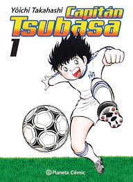

Captain Tsubasa es un manga y anime de deportes que sigue la historia de Tsubasa Ozora, un joven jugador de fútbol con un talento excepcional. La serie se centra en la carrera de Tsubasa en el fútbol, desde su infancia hasta su carrera profesional en Europa.
A medida que avanza la serie, Tsubasa se une a equipos de fútbol locales y nacionales, y se enfrenta a rivales cada vez más poderosos. También se une a la selección juvenil de Japón y compite en torneos internacionales de fútbol.
Captain Tsubasa es conocido por su representación emocionante y dramática del fútbol, con jugadas y movimientos sobresalientes que desafían la gravedad. La serie también se centra en los personajes y sus relaciones, y presenta una variedad de personajes secundarios memorables.
Captain Tsubasa ha sido popular en todo el mundo y ha sido adaptada a películas, videojuegos y otros medios. La serie ha sido especialmente influyente en la popularización del fútbol en Japón y en otros países de Asia.
